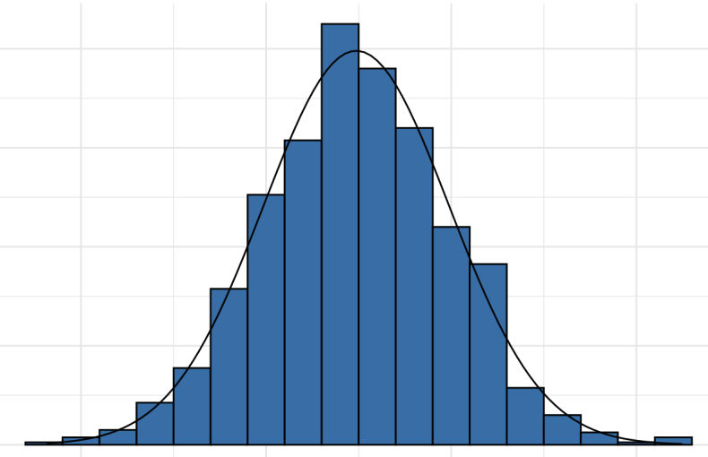
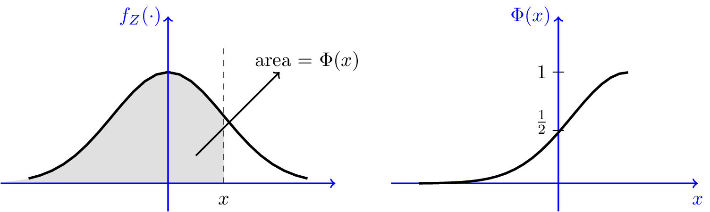

A random variable \(X\) has Bernoulli distribution with parameter \(p\in [0, 1]\) if it can take only two values \(\{0, 1\}\), and
Written as \(X \sim \text{Ber}(p)\).
What is \(\mathbb{E}(X^{100})\)?
We say \(X_1, X_2, \dots\) are Bernoulli trials with parameter \(p\), if \(X_1, X_2, \dots\) are i.i.d., with \(X_1 \sim \text{Ber} (p)\).
(1) Tossing a fair coin.
So \(X_1, X_2, \dots\) are Bernoulli trials with \(p = 1/2\).
(2) Defective parts (suppose the probability of the defective is \(1/100\)).
Then \(X_1, X_2, \dots X_n\) form \(n\) Bernoulli trials with \(p = 1/100\).
(3) Clinical trials (See Example 4.7.8)
Definition
A random variable \(X\) has the binomial distribution with parameters \(n\) and \(p\), if
for \(k = 0, 1, \dots, n\).
Written as \(X \sim \text{Bin} (n, p)\).
If \(X_1, X_2, \dots, X_n\) are i.i.d. \(\text{Ber}(p)\), then
What are \(\mathbb{E}(X), \text{Var} (X)\) and \(\psi_X(t)\)?
We have \(15\) red balls, and \(18\) blue ones. Then we repeatedly select \(8\) balls with replacement.
What are \(\mathbb{E}(X)\) and \(\text{Var}(X)\)?
If \(X_i \sim \text{Bin} (n_i, p), i = 1, \dots, m\), independent, then
If \(X \sim \text{Bin} (10, 0.5)\), \(Y \sim \text{Bin}(6, 0.5)\), independent, then
So
A certain computer server receives \(3\) requests per second on average.
Estimate the probability that the server receives \(5\) requests in a given second.
Divide the second into \(n = 10\) tenth of a second. At each tenth second, there is an independent trial where “success” means the request received.
For each trail, the success probability \(p = 3/10\). Then
We want to estimate \(\mathbb{P}(S_{10} = 5)\).
Divide the second into \(n = 1000\) milliseconds.
This time
and thus,
Assume \(S_n \sim \text{Bin} (n, p)\), where \(\mathbb{E}(S_n) = np = \lambda = ~\text{constant}\). Then
When \(\lambda = 3\),
Recall that
Let \(\lambda \ge 0\). The random variable \(Y\) has the Poisson distribution with parameter \(\lambda\) if
for \(k = 0, 1, 2, \dots\)
Write \(Y \sim \text{Poisson} (\lambda)\), where \(\lambda\) is often interpreted as the rate of rare events happened.
In a system with a large number of possible events, each of which is rare, then the number of events that occur in a fixed interval is often well modeled by a Poisson random variable.
Recall Bernoulli process (trials): (infinite) sequence of independent \(\text{Ber} (p)\) trials \(X_1, X_2, \cdots\)
Poisson process (continuous time analogue of Bernoulli process): sequence of events occurring randomly over a continuous time period, starting at \(0\).
For a time interval \(I\), we denote the length by \(|I|\).
Poisson process with parameter \(\lambda\) satisfies:
(1) \(N(I) \sim ~\text{Poisson} (\lambda |I|)\), i.e.,
(2) If \(I_1, I_2, \dots I_n\) are “disjoint” intervals, then \(N(I_1), N(I_2), \dots N(I_n)\) are independent.
Here, for example, we consider the intervals \([9, 10]\) and \([10, 12]\) are disjoint time intervals.
Calls come into a call center according to a Poisson process at rate \(20\) calls/hour. Starting at midnight \(t=0\). Find the probability that there are no calls between 9 am and 10 am, but \(60\) calls between 10 am and noon.
Have: \(\lambda = 20\) calls per hour
Want:

Let \(\mu \in \mathbb{R}, \sigma^2 > 0\). A random variable \(X\) with p.d.f.
has the normal distribution with parameter \(\mu\) and \(\sigma^2\), and we write \(X \sim \mathcal{N}(\mu, \sigma^2)\).
(1) \(f_X\) indeed is a p.d.f.
(2) Moment generating function:
(3) \(\mathbb{E}(X) = \mu, \text{Var} (X) = \sigma^2\).
Why?
If \(X \sim \mathcal{N}(\mu, \sigma^2), Y = aX + b\), where \(a \neq 0\), then
Proof.
Need to check if
Suppose \(X\) has its m.g.f. as
So what is \(X\)?
Solution:
Recall: If \(X\sim \mathcal{N}(\mu, \sigma^2)\), then
and
In particular, when \(\mu = 0, \sigma = 1\), we call \(Z \sim \mathcal{N}(0, 1)\) has the standard normal distribution, and
Its C.D.F. is

Assume \(Z\sim \mathcal{N}(0, 1)\). Please use the Table to compute
(1) \(\mathbb{P}(Z \le 1.04)\)
(2) \(\mathbb{P}(-1 < Z < 1.5)\)
For (1):
For (2):
If \(X\sim \mathcal{N}(7, 4)\), find \(\mathbb{P}(5 < X < 10)\).
Warning:
If \(X \sim \mathcal{N}(\mu, \sigma^2)\), then
Back to the previous example, \(\mu = 7, \sigma = 2\), then
Therefore,
If \(X_1, X_2, \dots, X_k\) are independent, and \(X_i \sim \mathcal{N}(\mu_i, \sigma_i^2)\), for \(i = 1, 2, \dots, k\), then
If \(X \sim \mathcal{N}(1, 2), Y \sim \mathcal{N}(0, 7)\), and \(X \perp Y\). What’s the standard deviation of \(X + Y\)?
Solution:
Try
Let \(X_1, X_2, \dots, X_n\) be random variables, then
is called the sample mean.
Note: The sample mean is a random variable!
If \(X_1, X_2, \dots, X_n\) form a random sample (i.i.d.) from a normal distribution with mean \(\mu\), and variance \(\sigma^2\). Then
Determine a sample size.
Suppose \(X_1, X_2, \dots, X_n\) form a random sample (i.i.d.) from a normal distribution with mean \(\mu\), and variance \(9\). Find a minimum value of \(n\), i.e. the number of samples such that
First,
or
Then
So we require
We choose \(n = 35\).
which means with probability at least \(0.95\), the (random) interval
contain the true mean \(\mu\).
For example, choose \(n = 36\), then
contains \(\mu\) with probability at least \(0.95\).
Definition If \(\log (Y) \sim \mathcal{N}(\mu, \sigma^2)\), then we say \(Y\) has the lognormal distribution with parameters \(\mu\) and \(\sigma^2\).
How to find \(\mathbb{E}(Y)\) and \(\text{Var} (Y)\)?
Let \(X = \log(Y)\), then \(Y = e^X\).
However, we know that
so
Similarly,
Therefore,
Definition
Let \(\lambda >0\). A random variable \(X\) has the exponential distribution with parameter \(\lambda\), if its p.d.f. is
We write \(X \sim \text{Exp} (\lambda)\).
(1)
(2)
(3)
Assume \(X \sim \text{Exp} (\lambda)\), then
Proof.
Recall: For a Poisson process with parameter \(\lambda\), we have \(N(I)\sim ~\text{Poisson} (\lambda |I|)\), i.e.,
Let \(T_1\) be the waiting time until the first occurrence.
Fact: \(T_1 \sim \text{Exp}(\lambda)\).
It suffices to show that the C.D.F. of \(T_1\) is \(1 - e^{-\lambda t}\).
If \(t \ge 0\), consider the event \(\{T_1 >t\}\):
Then
which is the same as
Now let \(T_k\) be the waiting time until $k$th occurrence, \(k = 1, 2, 3, \dots\)
Find the C.D.F. and then p.d.f. of \(T_k\).
C.D.F. of \(T_k\): \(\mathbb{P}(T_k \le t)\).
If \(t < 0, \mathbb{P}(T_k \le t) = 0\).
If \(t \ge 0\), consider the event \(\{T_k > t\}\):
Then
Therefore,
For p.d.f. of \(T_k\):
If \(t < 0\), \(f(t) = F'_{T_k}(t) =0\).
If \(t \ge 0\),
Let \(\lambda > 0, k \in \mathbb{N}\), we say a random variable \(X\) has the gamma distribution with parameter \(k\) and \(\lambda\) if its p.d.f. is
We write \(X \sim \text{Gamma} (k, \lambda)\).
In particular, when \(k=1\), \(\text{Gamma}(1, \lambda) = ~ \text{Exp}(\lambda)\).
The previous example says
If \(X \sim \text{Gamma}(k, \lambda)\) and \(Y \sim \text{Gamma}(l, \lambda)\) are independent, then \(X+Y \sim \text{Gamma}(k+l, \lambda)\).
Proof.
If \(X_1, X_2, \dots, X_k\) are independent, and \(X_i \sim \text{Exp}(\lambda)\), for \(i = 1, 2, \dots, k\), then
We can define the gamma distribution with parameters \(k = \alpha > 0\).
Definition
Let \(\lambda > 0, \alpha > 0\), a random variable \(X \sim \text{Gamma}(\alpha, \lambda)\) if its p.d.f. is
Note: \(\Gamma(\alpha)\) is a function such that \(\int_{-\infty}^\infty f(x)\, dx = 1\). Thus,
If \(\alpha = k \in \mathbb{N}\),
Theorem 5.7.5 (Moments) Assume \(X \sim \text{Gamma} (\alpha, \lambda)\), then
In particular,